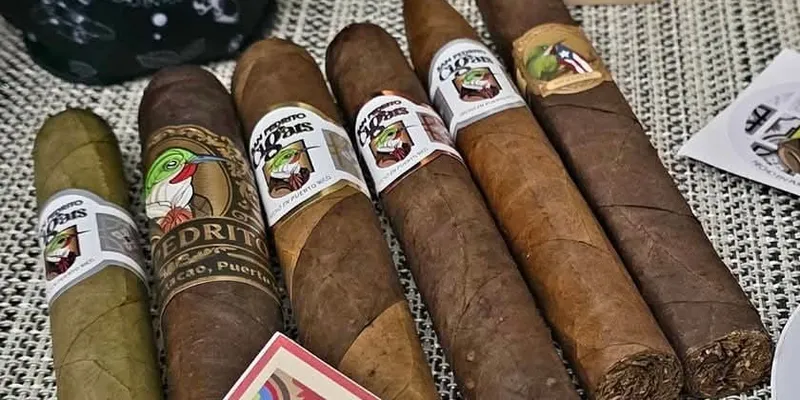

San Pedrito (línea artesanal)
By San Pedrito Cigars · Humacao, Puerto Rico
Wrappers: Candela, Habano LS, Connecticut, Habano 2000, San Andrés Negro, Maduro and Barber Pole. Filler with tobaccos from Ecuador and Nicaragua; leaves from the US, Mexico, Brazil, Ecuador and Nicaragua (Humo Latino, Jan 2025).
- Wrapper: Several (7 wrappers)
- Vitolas: 5 x 32, 5 x 34, Lancero 7 x 38, Double Corona 6 x 44, Pirámide 6.5 x 54, Toro 6 x 48, Toro 6 x 50, Toro 6 x 60
Sources: 1
See San Pedrito (línea artesanal) in the app, rate it and save it to Mi Hoja.